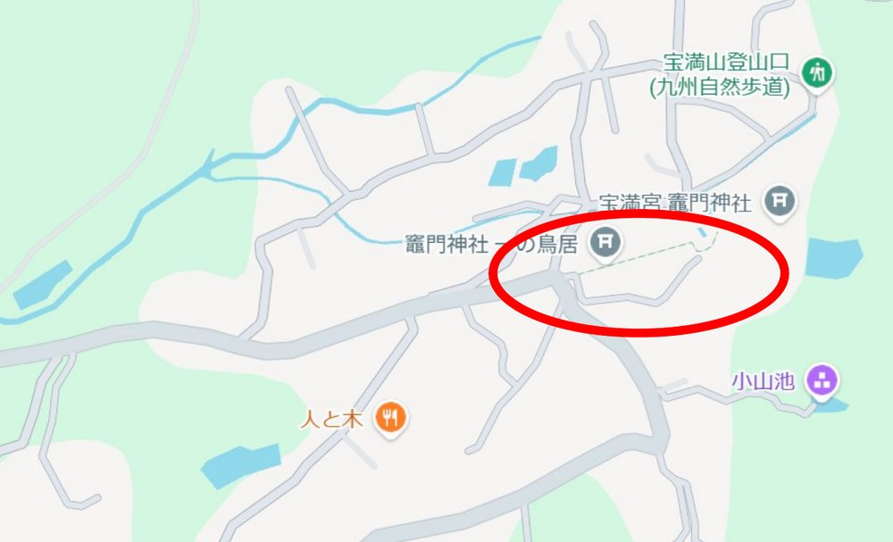
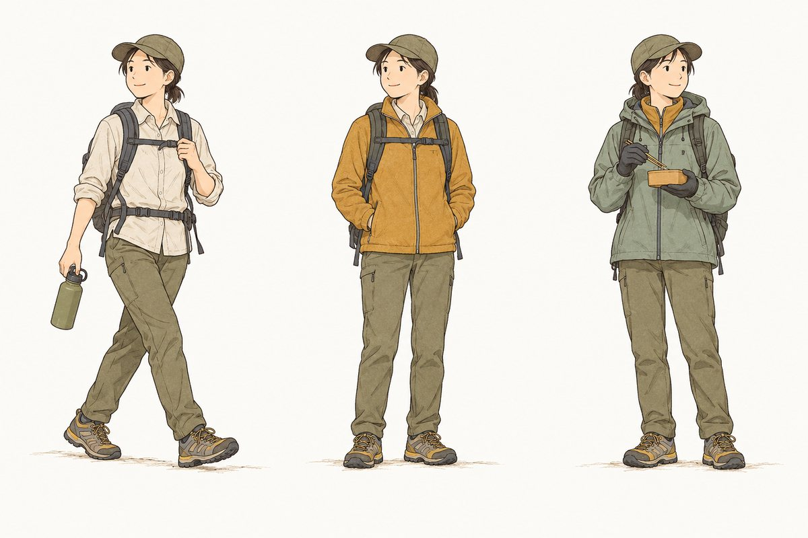

二〇二六年 十月二十五日（日）
福岡県太宰府市・宝満山 829.6m ／ 竈門神社駐車場 9:00集合
みなさまお疲れさまです。24期のおうです。
10月25日（日）、太宰府の宝満山（ほうまんざん）に登ります。
今回はお声がけをいただいた登山に、山頂バナナから数名で合流する形です。全体で13名前後、車に乗り合わせて向かいます。竈門神社（かまどじんじゃ）から石段の続く道を登り、山頂でお弁当を食べてから下山、帰りに太宰府付近で軽く食べて17:00ごろ解散の予定です。
宝満山は古くから信仰の山で、山伏が修行した修験道（しゅげんどう）の霊峰でもあります。2013年には、鳥海山・富士山に続く全国3例目の山として国の史跡に指定されました。道中の見どころは「三、」にまとめています。
※ 当日のルートは主催側の案内に従います。
宝満山は登り始めから山頂まで石段が続きます。中でも「百段ガンギ」はコース最大の難所といわれる急な石段で、一段ずつ高さや形が違います。今回は山頂12:00着と、一般的な目安（登り約2時間）よりゆっくりした計画です。自分のペースで登りましょう。
| 竈門神社下宮 参拝者第一駐車場 |
9:00 全員ここで集合 ／ Google Maps |
|---|

Google マップで「宝満山 竈門神社下宮参拝者第一駐車場」を目的地にしてください（上の「Google Maps」から開けます）。竈門神社の駐車場は約100台・1回400円です（太宰府市の案内による）。九州自動車道 太宰府ICから約8kmです。
駐車場とトイレは登山口の竈門神社にあります。山頂にトイレはありませんので、出発前に済ませておきましょう。
登山口は竈門神社の境内を抜けた先にあります。当日は全員そろって歩きます。
太宰府市の登山リーフレット（正面登山道 案内）の道順に沿っています。
神武天皇の母・玉依姫命（たまよりひめのみこと）を祀る、縁結びの神様として知られる神社。大宰府政庁の北東、つまり鬼門を守る場所にあるとされます。山頂の「上宮」に対して、麓のこちらが「下宮」です。
二合目、内山林道の終点の先に立つ鳥居。ここをくぐると石段の道に入り、休堂を過ぎたあたりから勾配がきつくなります。春はシャクナゲが咲く区間です。
「ガンギ（雁木）」は石段のこと。急斜面に自然石を組んだ石段が続き、一段ずつ高さも形も違います。登ってきた体力を最後に奪う、コース最大の難所。数えながら登るのもおすすめです。
明治より前まで「中宮」の社があった広場。山頂の上宮と麓の下宮のあいだにあたります。百段ガンギを越え、芭蕉の句碑を過ぎるとここに着きます。山頂まではもうひと登りです。
巨岩の間を縫って登ると、大きな岩の上に白い上宮の社が建ち、360°の眺めが広がります。頂上付近には玉依姫命の伝承にまつわる馬蹄石や竈門岩も。古い山の名「竈門山（かまどやま）」は、山の姿がかまどの形に見え、絶えずかかる雲や霧が煮炊きの煙のように見えたことに由来するとされます。ここでお弁当です。
全体で13名前後です。各車ごとに出発地から乗り合わせて、竈門神社駐車場に向かいます。
| おうの車（城南区発） | 4名。乗る方には、待ち合わせ場所と時刻をおうからLINEで個別に連絡します |
|---|---|
| ほかの車 | 各ドライバーの案内に従ってください |
どの車に乗るかわからない方、相乗りが必要になった方は、LINEにておうまでご連絡ください。
| 8:00頃（仮） | 各車ごとに待ち合わせ・出発 |
| 9:00 | 竈門神社駐車場 集合・登山開始 |
| 12:00頃 | 宝満山山頂 到着・昼食（お弁当） |
| 昼食後 | 下山開始 |
| 15:00頃 | 竈門神社駐車場 到着 |
| 下山後 | カフェレストラン「人と木（ひととき）」で補給 |
| 17:00頃 | 解散 |
※ 行動時間は昼食・休憩を含めた9:00〜15:00の目安です。ペース・天候により前後します。
昼食は山頂で食べます。お弁当を持参してください。
| 場所 | 太宰府市内山609-9（竈門神社の近く。集合場所の地図の左下）／ Google Maps |
|---|---|
| 営業時間 | 11:30〜16:00（料理のラストオーダー15:30）・月曜定休 |
| お店の案内 |
お店は16:00閉店です。下山が遅れると入れないことがあるので、当日は時間を見ながら動きます。
10/25はまだ天気予報の範囲外のため、平年の気温と気象庁の1か月予報からの見立てです。
空模様：晴れの日が多い見込み。気温は平年より高めの傾向です。気象庁の1か月予報（10月8日発表）では、10月24日からの週は「気温が平年より高い確率60%」、期間を通じて「平年に比べ晴れの日が多い」とされています。
福岡の10月25日の平年気温は最高22.0℃・最低14.3℃。山頂は駐車場より約680m高く、気温はおよそ4℃下がります。日の入りは17:34です。
週間予報に10/25が入るのは10/18ごろ。前日に主催側から天気の判断が届きます。

| 判断時刻 | 前日（10/24・土）の午前まで |
|---|---|
| 判断方法 | 翌日の天気予報を確認して、登るかどうかを決めます |
| 連絡 | LINEでお知らせします |
| 山頂バナナの窓口 | おう（LINE） |
|---|---|
| 集合場所 | 福岡県太宰府市内山 竈門神社下宮参拝者第一駐車場 |
体調や持病で気になることがあれば、事前におうまで。緊急時に共有するためです。
当日に向けて、車の中で予習しておきましょう。
山頂バナナクラブ テーマ・ソング ／ YouTubeで開く
山頂バナナクラブ テーマ・ソング２ ／ YouTubeで開く